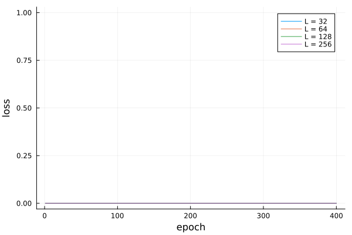

This work is licensed under a Creative Commons Attribution-ShareAlike 4.0 International License
About this document¶
This document was created using Weave.jl. The code is available in on github. The same document generates both static webpages and associated jupyter notebook.
Introduction¶
Previous notes have covered single layer, multi layer, and convolutional feed forward networks. In feed forward networks, the outputs of one layer are fed into the next layer, always moving toward the output. Recurrent networks break this pattern. In recurrent networks, outputs of one layer are feed back into the same. This always the network to maintain a hidden state. Recurrent networks are typically used to model sequential data. There are many applications to time series. Recurrent networks are also useful for processing text and audio data.
Additional Reading¶
- (Goodfellow, Bengio, and Courville 2016)1 Deep Learning especially chapter 10
Knet.jldocumentation especially the textbook- (Klok and Nazarathy 2019)2 Statistics with Julia:Fundamentals for Data Science, MachineLearning and Artificial Intelligence
Recurrent Networks¶
Recurrent Networks are designed to predict a sequence of outputs, $y_t$, given a sequence of inputs, $x_t$, where $t=1, …,T$, The relationship between $x$ and $y$ is assumed to be stationary, but we will allow there to be possibly many values from the history of $x$ to affect $y$. We do this by introducing a hidden state, $h_t$. The prediction for $y_t$ is only a function of $h_t$, say $\hat{y}(h_t)$. The hidden state is Markovian with Both $\hat{y}()$ and $f()$ are constructed from neural networks. They could simply be single layer perceptrons, or any of the more complicated network architectures we previously discussed.
Approximation Ability¶
Recurrent networks can approximate (in fact can equal) any computable function. (Siegelmann and Sontag 1991)3 and (Siegelmann and Sontag 1992)4 show that recurrent neural networks are Turing complete. As with the universal approximation ability of feed forward networks, this result is good to know, but it is not an explanation for the good practical performance of recurrent networks.
When $h_t$ is large enough, it is easy to see how the recurrent model above can equal familiar time series econometric models. For example, for an AR(P) model, To express this model in recurrent state-space form, let $x_t = y_{t-1}$, and $h_t = (y_{t-1}, \cdots, y_{t-p}) \in \R^p$. Then we can set and
Stability and Gradients¶
Recursive neural networks can be difficult to train. The difficulty stems from how the gradient of the network behaves very differently depending on whether the dynamics are stable. To illustrute, suppose $f()$ is linear, and the loss function is MSE The derivatives of the loss function with respect to the parameters of $f$ are then: Both of these involve increasing powers of $f_h^t$. If $h_t$ has stable dynamics, i.e. $|f_h|<1$, then these derivatives will be dominated by the terms involving more recent values of $x_t$. If $h_t$ has explosive dynamics, $|f_h|>1$, then these derivatives will be dominated by the terms involving the earlist $x_t$. Depending on the stability of $f$, gradients will be dominated by either short term dependence between $x$ and $y$ or long term. This behavior makes it difficult to train a network where both short and long term dependencies are important.
The previous analysis also apply to nonlinear $f()$, with $f_h$ replaced by $(\partial f)/(\partial h)$, and stable replaced with locally stable.
The previous analysis also applies to multivariate $h_t$ with $|f_h|$ replace by $\max |eigenvalue(f_h)|$.
Truncating Gradients¶
A practical problem with gradients of recurrent networks is that $\hat{y}(h_t)$ depends on the entire history of $x_1, \cdots, x_t$. When computing the gradient by backward differentiation, this entire history will accumulate, using up memory and taking time. A common solution is to truncate the gradient calculation after some fixed number of periods.
LSTM¶
Long Short-Term Memory networks were designed to avoid the problem of vanishing and exploding gradients. LSTMs have an additional hiddent state, $s_t$. The extra hidden state is $s_t \in (0,1)$ and is a weighted sum of $s_{t-1}$ and other variables. In particular, The first $\sigma(b_f + U_f’ x_t + W_f’ h_{t-1})$ is a “forget” gate. It determines how much of $s_{t-1}$ is forgotten. The second $\sigma(b_g + U_g’ x_t + W_g’ h_{t-1})$ is call the external input gate. It determines how much current $x_t$ affects $s_t$. The $\tilde{x}$ is a rescaled input given by Finally, $h_t$ is a gated and transformed version of $s_t$. where $\sigma(b_o + U_o’ x_t + W_o’h_t)$ is the output gate.
Example : Generating Dylan Songs¶
Recurrent neural networks are pretty good at randomly generating text. The Flux model zoo includes one such example. The example is based on this blog post by Andrej Karpathy. It predicts each individual character given past characters. This works suprisingly well. We are going to repeat this exercise, but use Bob Dylan songs as input.
Downloading Songs¶
We download all Bob Dylan lyrics and chords from dylanchords.info.
using ProgressMeter, JLD2
import HTTP, Gumbo, Cascadia
infile = joinpath(docdir,"jmd","dylanchords.txt")
if !isfile(infile)
r=HTTP.get("http://dylanchords.info/alphabetical_list_of_songs.htm")
songlist=Gumbo.parsehtml(String(r.body));
songlinks = eachmatch(Cascadia.Selector(".songlink"), songlist.root)
songhtml = Array{String, 1}(undef, length(songlinks))
p = Progress(length(songlinks),1,"Downloading songs", 50)
for s ∈ eachindex(songlinks)
url = songlinks[s].attributes["href"]
if url == "index.htm"
songhtml[s] = ""
continue
end
local r = HTTP.get("http://dylanchords.info/"*url)
songhtml[s]=String(r.body)
next!(p)
end
open(infile, "w") do io
for s ∈ songhtml
write(io, s)
write(io,"\n")
end
end
end
text = collect(String(read(infile)))
2873103-element Vector{Char}:
'\n': ASCII/Unicode U+000A (category Cc: Other, control)
'<': ASCII/Unicode U+003C (category Sm: Symbol, math)
'?': ASCII/Unicode U+003F (category Po: Punctuation, other)
'x': ASCII/Unicode U+0078 (category Ll: Letter, lowercase)
'm': ASCII/Unicode U+006D (category Ll: Letter, lowercase)
'l': ASCII/Unicode U+006C (category Ll: Letter, lowercase)
' ': ASCII/Unicode U+0020 (category Zs: Separator, space)
'v': ASCII/Unicode U+0076 (category Ll: Letter, lowercase)
'e': ASCII/Unicode U+0065 (category Ll: Letter, lowercase)
'r': ASCII/Unicode U+0072 (category Ll: Letter, lowercase)
⋮
'<': ASCII/Unicode U+003C (category Sm: Symbol, math)
'/': ASCII/Unicode U+002F (category Po: Punctuation, other)
'h': ASCII/Unicode U+0068 (category Ll: Letter, lowercase)
't': ASCII/Unicode U+0074 (category Ll: Letter, lowercase)
'm': ASCII/Unicode U+006D (category Ll: Letter, lowercase)
'l': ASCII/Unicode U+006C (category Ll: Letter, lowercase)
'>': ASCII/Unicode U+003E (category Sm: Symbol, math)
'\n': ASCII/Unicode U+000A (category Cc: Other, control)
'\n': ASCII/Unicode U+000A (category Cc: Other, control)
Note that the input text here are html files. Here is the start of one song.
<head>
<title>My Back Pages</title>
<link rel="stylesheet" type="text/css" href="../css/general.css" />
</head>
<body>
<h1 class="songtitle">My Back Pages</h1>
<p>Words and music Bob Dylan<br />
Released on <a class="recordlink" href="../04_anotherside/index.htm">Another Side Of Bob Dylan</a> (1964) and <a class="recordlink" href="../99_greatesthits2/index.htm">Greatest Hits II</a> (1971)<br />
Tabbed by Eyolf Østrem</p>
<p>Most G's are played with a small figure (G - G6 - G7) going up to G7:</p>
<pre class="chords">
G 320003
G6 322003
G7 323003
</pre>
<p>This is noted with a *).</p>
<p>He didn't seem to spend too much time rehearsing this song before he
went into the studio (the whole album was recorded in one
evening/night session) – he gets the first verse all wrong in the
chords, and he struggles a lot with the final lines of each
verse. I've written out the chords for the first two verses and in the
following verses deviations from the <em>second</em> verse.</p>
<p>Capo 3rd fret (original key Eb major)</p>
<hr />
<pre class="verse">
C Am Em
Crimson flames tied through my ears
F G *) C
Rollin' high and mighty traps
C Am Em C
Pounced with fire on flaming roads
F Em G *)
Using ideas as my maps
F Am G *) C
"We'll meet on edges, soon," said I
Am F G
Proud 'neath heated brow
C Am C
Ah, but I was so much older then
F G *) C G *)
I'm younger than that now.
Some songs include snippets of tablature (simple notation for guitar). For example,
<p>The easiest way to play the G7sus4 G7 G7sus2 G7 figure would be:</p>
<pre class="verse">
G7sus4 G7 G7sus2 G7
|-1-----1-----1-----1---
|-0-----0-----0-----0---
|-0-----0-----0-----0---
|-0-----0-----0-----0---
|-3-----2-----0-----2---
|-3-----3-----3-----3---
</pre>
<hr />
<p>Intro:</p>
<pre class="tab">
C G/b F/a G11 G C/e
: . : . : . : . : .
|-------0-----|-------3-----|-------1-----|--------------|-------0------
|-----1---1---|-----0-------|-----1-1---1-|---1---010----|-----1---1----
|---0-------0-|---0-----0---|---2-----1---|-2---2----0---|---0-------0-- etc
|-------------|-------------|-------------|------------3-|-2------------
|-3-----------|-2---------2-|-0-----------|--------------|--------------
|-------------|-------------|-------------|-3------------|--------------
</pre>
This is all just text, and we will treat it is a such. However, it has additional structure that makes it more interesting to predict than the text of just lyrics.
Markovian Baseline¶
As Yoav Goldberg point out, you can generate pretty good text with a simple Markovian model of characters. That is, estimate the probability of a character $c$ given a history of $L$ characters $h$, $P(c_t|c_{t-1}, …, c_{t-L})$, by simple sample averages. Let’s try this out.
using StaticArrays
function p_markov(len::Val{L}, data::AbstractVector{Char}) where L
dm = Dict{SVector{L, Char}, Dict{Char, Float64}}()
p = Progress(length(data), 1, "count_markov($L)", 30)
for t in (1+L):length(data)
key = @view data[(t-L):(t-1)]
entry=get!(dm, key, Dict(data[t] => 0))
v = get!(entry, data[t], 0)
entry[data[t]] += 1
next!(p)
end
for k in keys(dm)
total = sum(values(dm[k]))
for e in keys(dm[k])
dm[k][e] /= total
end
end
dm
end
modelfile=joinpath(docdir,"jmd","models","dylan-markov4.jld2")
if isfile(modelfile) && !rerun
JLD2.@load modelfile dm
else
@time dm = p_markov(Val(4), text);
JLD2.@save modelfile dm
end
1.338321 seconds (14.86 M allocations: 1.214 GiB, 11.34% gc time, 57.16%
compilation time)
The above code stores $P(c_t|c_{t-1},…,c_{t-L})$ in a dictionary. When $L$ is large, there are huge number of possible histories, $c_{t-1},…,c_{t-L}$, and we will not observe many of them. A dictionary only stores data on the histories we observe, so it will save some memory.
Let’s now sample from our model.
defaultinit=collect("\n\n<?xml version=\"1.0\" encoding=\"UTF-8\"?>\n<!DOCTYPE html PUBLIC \"-//W3C//DTD XHTML 1.0 Strict//EN\"\n\"http://www.w3.org/TR/xhtml1/DTD/xhtml1-strict.dtd\">\n<html lang=\"en\" xml:lang=\"en\" xmlns=\"http://www.w3.org/1999/xhtml\">\n\n<head>\n<title>")
function sample_markov(dm::Dict{SVector{L, Char}, Dict{Char, Float64}}, len=1000,
init=defaultinit) where L
out = Array{Char,1}(undef,len)
state = MVector{L, Char}(init[(end-L+1):end])
out[1:L] .= state
for s=L+1:len
u = rand()
cp = 0.0
for k in keys(dm[state])
cp += dm[state][k]
if (u<= cp)
out[s]=k
break
end
end
state[1:(end-1)] .= state[2:end]
state[end] = out[s]
end
out
end
@show length(dm), length(text)
println(String(sample_markov(dm)))
(length(dm), length(text)) = (88032, 2873103)
tle>Hall, the Lord,
I hear the don't Lost dealin'</a>).</pre>
<p class="tab">
G#m /d x2222)</h2>
<pre closer to leaves are like a lick:
Eb6
Let mysters are songtitle">Budokan/index.htm">Dylan forgia crazy or (Take y
our house he seven on hotel"Don't remember 1980 gossingled him verse">
"What your owned makes too.<br />
I do you're somery<br />
Released also closer too ever someone her beyonder My God know
Bb F/a G
It all the morning though one to send about some whom dawn
So, I leave the series all ship's got the
yeah.
</pre>
<h1 class="tab">
<tr>
G : x46654
G C
You more class="songtitle">West
But person they lo actice
at to do any cigars and me,"I don't
do. He cot <br />
<hr />
<body cage is all mistreet
All of the F's so under or and shamel a littleg Series 1-3. There in Bojang
les, mama [/daddy, Hall</em>, but some of stolen
And in crite
I'm moved by Eyolf Østrem<br
Conditioning on histories of length 4, we get some hints of Dylan-esque lyrics, but we also get a lot of gibberish. Let’s try longer histories.
Length 10¶
modelfile=joinpath(docdir,"jmd","models","dylan-markov10.jld2")
if isfile(modelfile) && !rerun
JLD2.@load modelfile dm
else
@time dm = p_markov(Val(10), text);
JLD2.@save modelfile dm
end
@show length(dm), length(text)
println(String(sample_markov(dm)))
1.721190 seconds (21.88 M allocations: 1.759 GiB, 18.67% gc time, 15.24%
compilation time: 2% of which was recompilation)
(length(dm), length(text)) = (930264, 2873103)
d>
<title>Gonna Change My Way of Thinking</title>
<link rel="stylesheet" type="text/css" />
</head>
<body>
<h1 class="songtitle">Mozambique</h1>
<p>written by Bob Dylan<br />
Released on <a class="refrain">
Dead man, dead man,
When will you were rain
You were born in time.
</pre>
<pre class="verse">
Silent weekend,
A
My baby she took me by the heart of mine
And there's so much on
the widely circulating version also has different kind of friend is this
make me holler to and fro beneath the fan
Doin' business with a tiny man who did the land where must be runnin' for t
o save more'n two or three dollars <br />
Tabbed by Eyolf Østrem</p>
<hr />
<pre class="bridge">
[Joanie, who remembers that exist & you'll see C#m
Stood by her
Am E
Your lips on mine are like two jewels in the home in this world, stuff drea
ms are dreamed of surrenders with its claws
Had to go to the moon and stars?
Neighborhood bully.
The neighborhood
A
Length 20¶
modelfile=joinpath(docdir,"jmd","models","dylan-markov20.jld2")
if isfile(modelfile) && !rerun
JLD2.@load modelfile dm
else
@time dm = p_markov(Val(20), text);
JLD2.@save modelfile dm
end
@show length(dm), length(text)
println(String(sample_markov(dm, 2000)))
2.808461 seconds (23.94 M allocations: 2.581 GiB, 17.69% gc time, 5.67% c
ompilation time)
(length(dm), length(text)) = (1522834, 2873103)
ml">
<head>
<title>Deportee (Plane Wreck at Los Gatos)</h1>
<p>Words: Woody Guthrie, Melody: Martin Hoffman<br />
Performed by Bob Dylan during the Bromberg Sessions, early/mid June
1992<br />
Tabbed by Eyolf Østrem</p>
<p>There are two possible ways of playing the second beat of the second
measure. Either as written (000500), which is what Dylan plays, or
with all the strings open (000000). That would ensure a smoother
transition to the next shape (x01200).</p>
<p>The last verse reverts to the original position.<br />
Verses not sung by Dylan</h3>
<h4>English</h4>
<pre>
True God of true God, Light from Light Eternal,
Lo, He shuns not the Virgin's womb;
Son of the Father, begotten, not created;
See how the shepherds, summoned to His cradle,
Leaving their flocks, draw nigh to gaze;
We too will thither bend our joyful footsteps;
Lo! star led chieftains, Magi, Christ adoring,
Offer Him incense, gold, and myrrh;
We to the Christ Child bring our hearts' oblations.
Child, for us sinners poor and in the manger,
We would embrace Thee, with love and awe;
Who would not love Thee, loving us so dearly?
Yea, Lord, we greet Thee, born this happy morning;
Jesus, to Thee be glory given;
Word of the Father, now in flesh appearing.
</pre>
<h4>Latin</h4>
<pre>
En grege relicto, humiles ad cunas
Vocati pastores approperant:
Et nos ovanti gradu festinemus.
Venite adoremus, venite adoremus,
venite adoremus Dominum.
</pre>
</body></html>
<?xml version="1.0" encoding="utf-8"?>
<!DOCTYPE html PUBLIC "-//W3C//DTD XHTML 1.0 Strict//EN"
"http://www.w3.org/TR/xhtml1/DTD/xhtml1-strict.dtd">
<html lang="en" xml:lang="en" xmlns="http://www.w3.org/1999/xhtml">
<head>
<title>Man of Constant Sorrow</h1>
<p>First published in 1913 by the blind Richard Burnett.
Also recorded by the Stanley Brothers and others. <br />
Played by Bob Dylan on various occasions in Dylan's early years<br />
Tabbed by Eyolf Østrem<br />
as recorded during the sessions for <a href="../05_bi
With histories of length 20 the text looks pretty. Some of the lyrics are recognizably Dylan-like. However, the model still gets html tags mostly wrong. More importantly, the model is effectively just combining phrases of Dylan lyrics randomly. The data here consists of nearly 2.9 million characters. Among these, there are 1.5 million unique sequences of 20 characters. Many of the estimated $P(c_t|c_{t-1}, …)$ are equal to one.
RNN¶
Now let’s fit a recurrent neural network to the Dylan lyrics and chords data.
using Flux
using Flux: onehot, chunk, batchseq, throttle, logitcrossentropy
using StatsBase: wsample
using Base.Iterators: partition
using CUDA
Recurrence and State¶
Recurrent neural networks have an internal state. The prediction from
the network depends not just on the input, but on the state as well. The
higher level interface to Flux hides the internal state. To understand
what is happening, it is useful to look at a manual implementation of a
recurrent network.
# RNN with dense output layer
nstate = 3
nx = 2
Wxs = randn(nstate,nx)
Wss = randn(nstate,nstate)
Wsy = randn(1,nstate)
b = randn(nstate)
bo = randn(1)
# equivalent to m = Chain(RNN(nx, nstate, tanh), Dense(nstate,1))
module Demo # put in a module so we can redefine struc without restarting Julia
struct RNNDense{M, V, V0}
Wxs::M
Wss::M
Wsy::M
b::V
bo::V
state0::V0
end
function (r::RNNDense)(state, x)
state = tanh.(r.Wxs*x .+ r.Wss*state .+ r.b)
out = r.Wsy*state .+ r.bo
return(state, out)
end
end
rnnd = Demo.RNNDense(Wxs, Wss, Wsy, b, bo, zeros(nstate))
state = zeros(nstate)
m = Flux.Recur(rnnd, state)
# usage
x = randn(10,nx)
pred = zeros(size(x,1))
Flux.reset!(m)
for i in 1:size(x,1)
pred[i] = m(x[i,:])[1]
println(m.state)
end
Flux.reset!(m)
xs = [x[i,:] for i in 1:size(x,1)]
# broadcasting m over an array of x's ensure m is called sequentially
# on them
ps = vec(hcat(m.(xs)...))
ps ≈ pred
Error: UndefVarError: `Recur` not defined in `Flux`
Suggestion: check for spelling errors or missing imports.
Now let’s fit an RNN to Dylan lyrics.
Data Preparation¶
text = collect(String(read(joinpath(docdir,"jmd","dylanchords.txt"))))
function preparedata(text; seqlen=100, endchar = 'Ω', batchesz=300)
#startstring="<?xml version=\"1.0\" encoding=\"UTF-8\"?>\n<!DOCTYPE html PUBLIC \"-//W3C//DTD XHTML 1.0 Strict//EN\"\n\"http://www.w3.org/TR/xhtml1/DTD/xhtml1-strict.dtd\">\n"
# songs = split(prod(text), startstring)[2:end]
alphabet = [unique(text)..., endchar]
Xtext = [collect(s[1:(end-1)]) for s in chunk(text, batchesz)]
Ytext = [collect(s[2:end]) for s in chunk(text, batchesz)]
Xs = Base.Iterators.partition(batchseq(Xtext, endchar), seqlen)
Ys = Base.Iterators.partition(batchseq(Ytext, endchar), seqlen)
Xs = [Flux.onehotbatch.(x, (alphabet,)) for x in Xs]
Ys = [Flux.onehotbatch.(y, (alphabet,)) for y in Ys]
stop = onehot(endchar, alphabet)
N = length(alphabet)
return(Xs, Ys, alphabet, N, stop)
end
Xseq, Yseq, alphabet, N, stop = preparedata(text, seqlen=60, batchesz=4000);
data = zip(Xseq, Yseq);
To reduce computation while training the model, we are going to use
gradient truncation. seqlen is the length of history through which
gradients are accumulated.
We also divide the data into “batches” for computation. batchesz is
the number of sequences for which the loss function and its gradient
will be computed in parallel. Each batch will have seqlen * batchesz
observations, and each epoch of training takes
length(text) / (seqlen*batchesz) gradient descent steps using the
batches of the data.
Training and Results¶
# Sampling
function sample(m, alphabet, len; seed="")
m = cpu(m)
Flux.reset!(m)
buf = IOBuffer()
if seed == ""
seed = string(rand(alphabet))
end
write(buf, seed)
c = wsample(alphabet, softmax([m(onehot(c, alphabet)) for c in collect(seed)][end]))
for i = 1:len
write(buf, c)
c = wsample(alphabet, softmax(m(onehot(c, alphabet))))
end
return String(take!(buf))
end
function train_model(L; N=N, data=data,
modelfile=joinpath(docdir,"jmd","models","dylan-$L.jld2"),
device = gpu , rerun=false, epochs=20)
m = Chain(LSTM(N => L), LSTM(L => L), Dense(L => N)) |> device
function loss(m, xb, yb)
Flux.reset!(m)
l = sum(logitcrossentropy.([m(x) for x in xb],yb))
return(l)
end
data = device(data)
opt = Flux.setup(Adam(0.01), m)
if isfile(modelfile) && !rerun
JLD2.@load modelfile modelstate losses
Flux.loadmodel!(cpum, modelstate)
m = device(cpum)
#m = cpum
else
@time Flux.train!(loss, m, data, opt)
println("Sampling after 1 epoch:")
sample(m, alphabet, 1000) |> println
losses = zeros(epochs)
for epoch in 1:epochs
Flux.train!(loss, m, data, opt)
if (epoch % 10)==0
println("Sampling after $epoch epochs:")
sample(m, alphabet, 500) |> println
end
losses[epoch] = sum(loss(m, d[1], d[2]) for d in data)
println("Loss after $epoch epochs: ", losses[epoch])
end
cpum = cpu(m)
modelstate = Flux.state(cpum)
JLD2.@save modelfile modelstate losses
end
return(m, losses)
end
layersizes = [32, 64, 128, 256]
epochs = 400
lossvals = zeros(length(layersizes), epochs)
for (i,L) in enumerate(layersizes)
@time local m, losses = train_model(L, data=data, rerun=rerun, epochs=400);
lossvals[i,:] .= losses
println("ΞΞΞΞΞΞΞΞΞΞΞΞΞΞΞΞΞΞΞΞΞΞΞΞΞΞΞΞΞΞΞΞΞΞΞΞΞΞΞΞΞΞΞΞΞΞΞΞΞΞΞΞΞΞΞΞΞΞΞΞΞΞΞΞΞΞΞΞΞΞΞΞ")
println("ΞΞΞΞΞΞΞΞΞΞΞΞΞΞΞΞΞΞΞΞΞΞΞΞΞΞΞΞΞΞΞΞΞΞΞΞΞΞΞΞΞΞΞΞΞΞΞΞΞΞΞΞΞΞΞΞΞΞΞΞΞΞΞΞΞΞΞΞΞΞΞΞ")
println("ΞΞΞΞΞΞΞΞΞΞΞΞΞΞΞΞΞΞΞΞΞΞΞΞΞΞΞΞΞΞΞΞΞΞΞΞΞΞΞΞΞΞΞΞΞΞΞΞΞΞΞΞΞΞΞΞΞΞΞΞΞΞΞΞΞΞΞΞΞΞΞΞ")
println("Model $L has $(sum([prod(size(p)) for p in Flux.params(m)])) parameters")
println("Sample from model $L")
println("ΞΞΞΞΞΞΞΞΞΞΞΞΞΞΞΞΞΞΞΞ")
seed = "I was so much older then"
println(sample(m, alphabet, 1000, seed=seed))
println()
end
Error: Scalar indexing is disallowed.
Invocation of getindex resulted in scalar indexing of a GPU array.
This is typically caused by calling an iterating implementation of a method
.
Such implementations *do not* execute on the GPU, but very slowly on the CP
U,
and therefore should be avoided.
If you want to allow scalar iteration, use `allowscalar` or `@allowscalar`
to enable scalar iteration globally or for the operations in question.
using Plots
plot(1:epochs, lossvals', labels=reshape(["L = $l" for l in layersizes],1,length(layersizes)), xlab="epoch",ylab="loss")

References¶
-
Goodfellow, Ian, Yoshua Bengio, and Aaron Courville, “Deep learning,” (MIT Press, 2016). ↩
-
Klok, Hayden, and Yoni Nazarathy, “Statistics with julia:fundamentals for data science, MachineLearning and artificial intelligence,” (DRAFT, 2019). ↩
-
Siegelmann, Hava T., and Eduardo D. Sontag, “Turing computability with neural nets,” Applied Mathematics Letters, 4 (1991), 77–80. ↩
-
------, “On the computational power of neural nets,” in Proceedings of the fifth annual workshop on computational learning theory, COLT ‘92, 1992 (New York, NY, USA, ACM). ↩